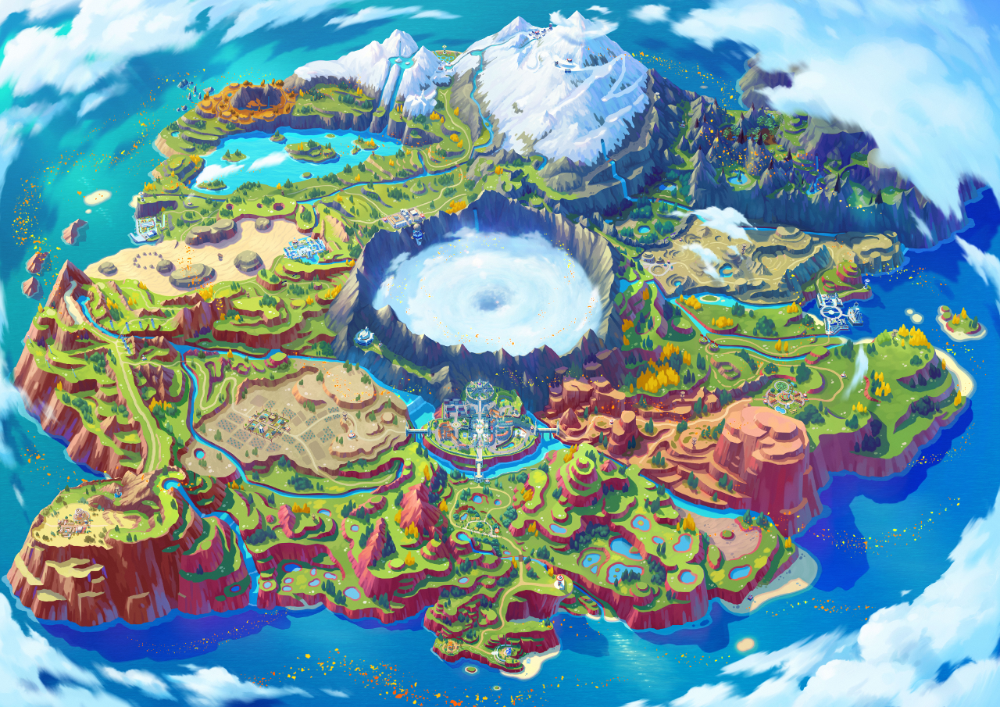
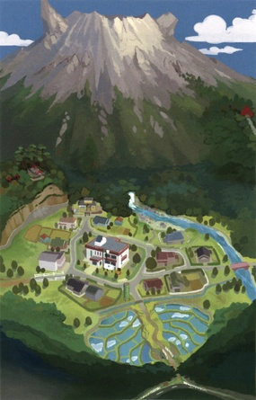
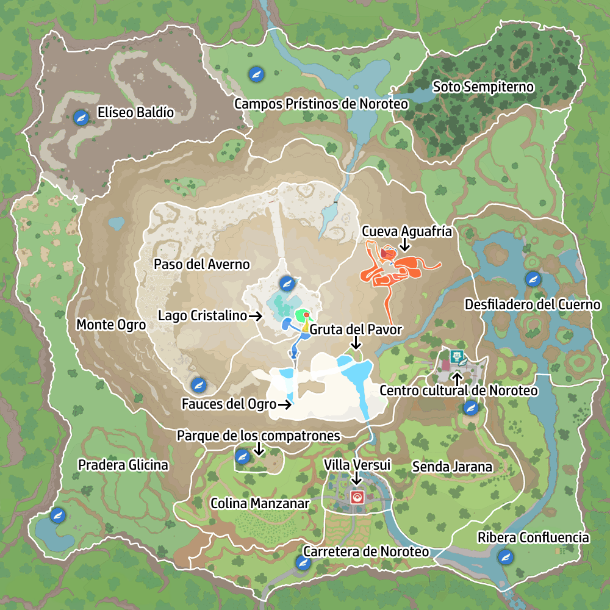
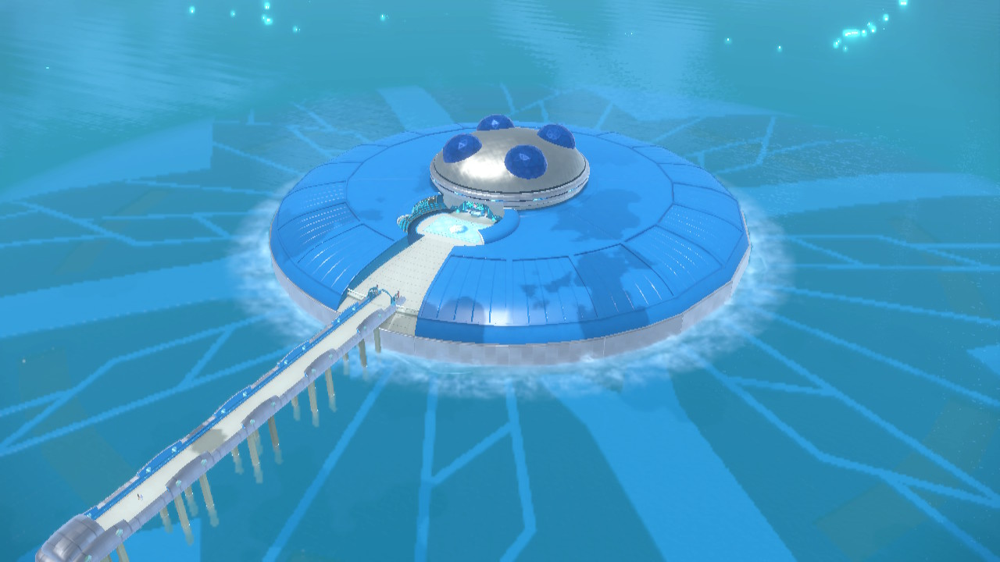
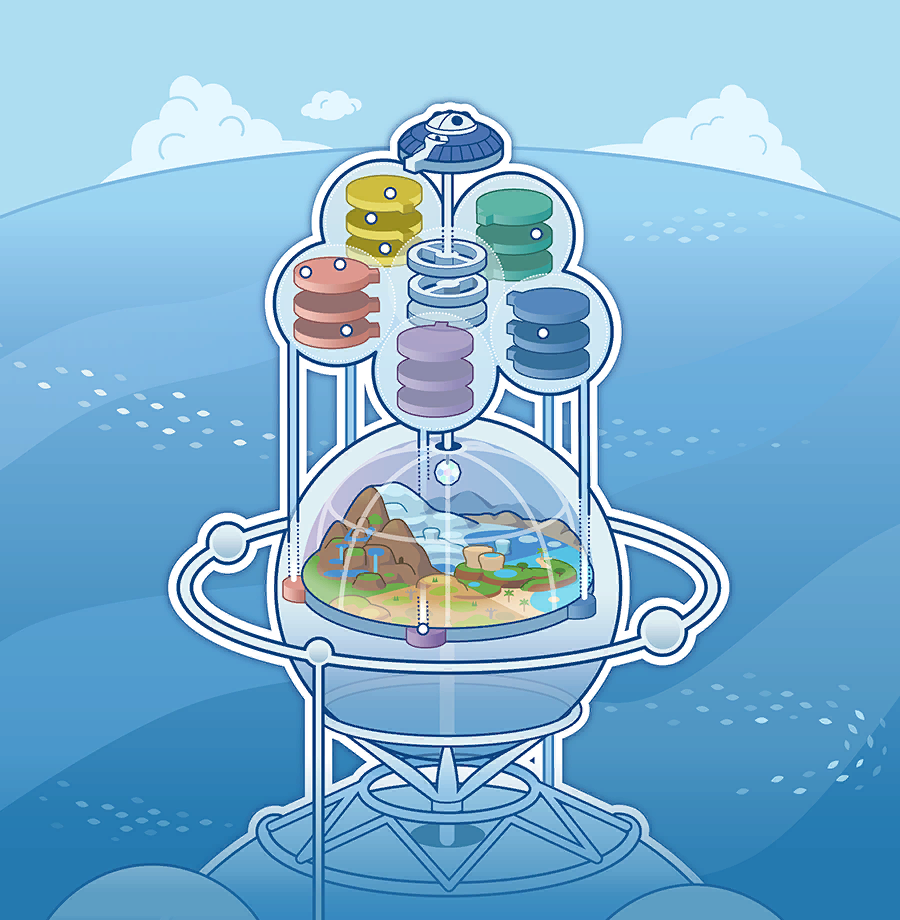
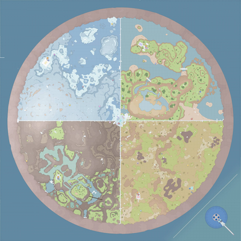

Carátula
Pokémon Escarlata
Nintendo Switch · 2022
Región de Paldea · Escarlata y Púrpura (2022)
Aquí va la introducción a la región de Paldea: dónde está, cómo es y qué la hace especial.
Aquí puedes contar la historia de la región: su pasado, sus leyendas, sus villanos, la Liga Pokémon...
Y aquí lo que vive el protagonista: sale de su pueblo, recibe su primer Pokémon de la Profesora Olim o el Profesor Turo y empieza su viaje.

Nintendo Switch · 2022
Nintendo Switch · 2022
Nintendo Switch · 2023
Nintendo Switch · 2023
La primera parte del DLC transcurre en Noroteo (Kitakami), una tierra rural con festivales y leyendas propias.


La segunda parte transcurre en la Academia Arándano, una escuela en mitad del mar con un gran hábitat interior: el Terario.


